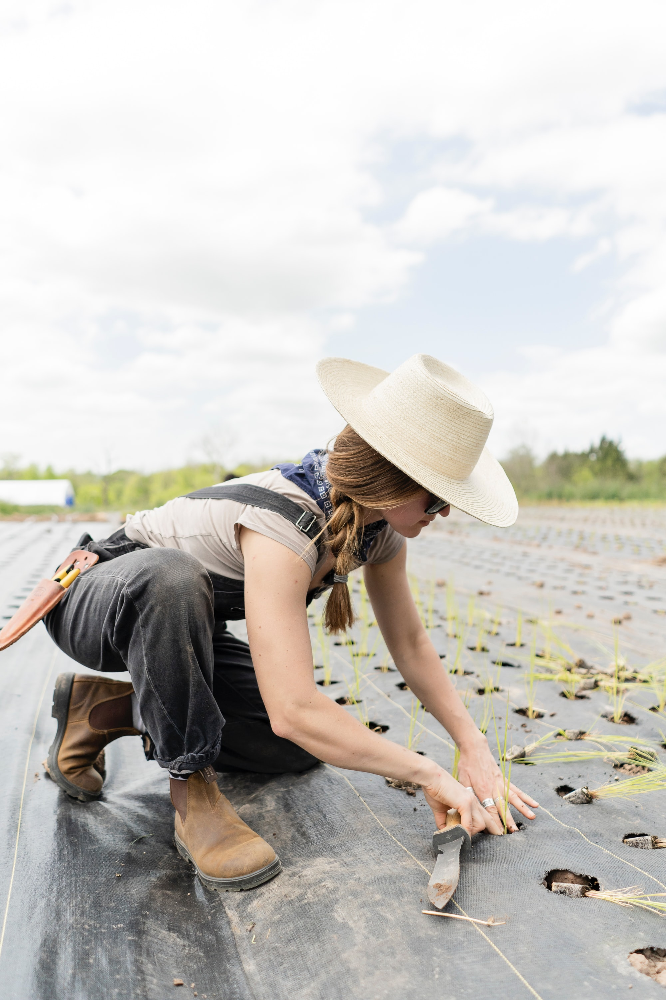

Target Audience
This page aims to help people from Preston and other neighboring areas to know about the weather and other local events. This will also be helpful for people who would want to visit Preston. Adults as well as children will benefit from this page.
Two Personas
David Smith
David Smith lives in San Francisco, California. He is 35 years old. He has a photography business. He usually travels to different places for his business. He always want to know the weather in advance, of the places he would go to. He also checks the different locations and the popular or beautiful sites that they can go to for the photoshoots.
Annie Jones
Annie Jones lives in the Preston Area.She is 32 years old. She owns and manages a farm in the local community. She always check the weather for the entire week. She wants to make sure that she'll be ready for any weather problems that might come.
Scenarios
- What's going to be the weather this weekend?
- What are the famous events or festivals in the area?
- I want to know the popular tourist destinations in the area.
- How do people prepare during natural calamities?
- When is the best time to visit the area?